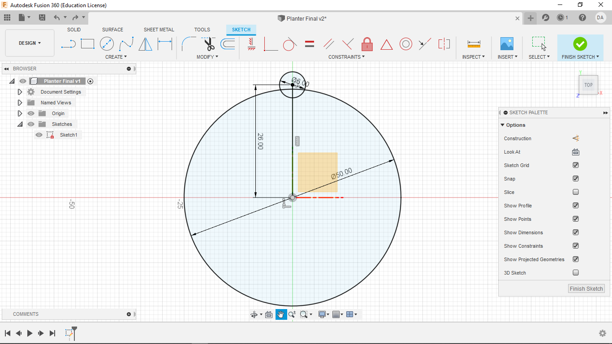

Week Four
Fusion 360 Meets Plants
This week we continued to work with the 3D printers and Fusion360. We had to print a planter using vase mode and design (but not print!) a watering can.
1-2. Designing and Printing a Planter
It can be hard to separate the process of learning how to print in vase mode and the printing of the vase, so for this week I have decided to combine the two criteria we are being graded on (while I don't have your approval, I humbly ask for forgiveness instead of permission. Please be merciful.
Before starting this weeks assignment, I watched this video which showed the basic steps for printing in vase mode.

After watching the video, I had the critical piece of information: vase mode hollows out your design. With this in mind, I started designing a solid planter.
Like always, I start by creating a document in Focus360, making the origin and planes visible, and creating a new sketch on the x,y-plane.

I then made a circle centered at the origin with a diameter of 50 mm.
From there, I made a line of length 26 mm and set it virtical. I also made a circle of diameter 6 mm centered at the out end-point of that line.
At that point, I used the create circular pattern tool to copy the circle just enough times to cover the entire circumference of the circle.
Then I extruded the center to the desired hight, ready for export.
LIke last week, it was saved as an STL file and opened in PrusaSlicer (sorry, the pictures are of an older object).


Once the vase is loaded, tab over to "print settings"

Select "Spiral Vase" and then click ok when the warning pops up.


Then go back to the main tab and click "slice now". Then check to make sure there are no errors in the rendoring of our print by using the scroll bar to the middle right. (again, sorry about the old picture, but why fix what ain't broken) This time, we should see a few layers of base, and then a very very thin wall to our planter.

Again, like last week, export the code to a SD card and put that in one of the Prusa MK3s and begin the print.

The final product will look something like this. Note, we used "spire vase" because it achives much thinner walls (also seen below) and a much faster print compaird to the shelling technique that will be displayed in the watering can.
3. Designing a Watering Can
The second part of this week's assignment was designing, but not printing, a watering can to take case of our future plants.
As always, start by making a document, making the origin and planes visible, and create a sketch on the x,y-plane.
Then make an ellipse with major axis of 100 mm and minor axis of 60 mm.
Next, extrude the the ellipse by 75 mm.
Now, on the top face of our object, make a dot on one vertex of the major axis. Then create a line fron the center point to the line and contrain it with a set dimension (in this case 50 mm). This will fully define all parts of our sketch.
Then create a tangent plane using the dot we just made using the "plane tanget to face at point" tool.
Then, after create a new sketch on this plane, project the point we just made onto our new plane. Then make a line down to the x-axis. Then create a circle centered on that line with a diameter of 25 mm. Then set its height from the top using a simple line and dimention technique. In this case, the dimention is 15 mm.
Lastly, creat a line of unimportant lenth from the center of the circle out to the side (perpendicular to main virtical line).
Then create a plane at an angle using that side line as your rotation point. An angle of 110 degrees will work
Using that plane, create an offset plane -60 mm away.
On this plane, project the center point of the circle we made on the side of our extruded ellipse.Then make another circle of equal diameter (25 mm) using this point as our center.
Extrude this circle using the settings below.
Now create another offset plane (-20 mm). Project the center of our new circle onto our new plane, and make another circle centered at that point. This time give it a diameter of 35 mm.
Now use the loft command (settings below) to connect the two planes, circle to circle.At this point, the shape of our watering can is nearly complete. Use the shell tool to hollow out our watering can with a wall thickness of 2 mm.
From here, start a new sketch on the surface of the newest circle. I chose to create a hexagonal deisgn, consisting of three circle which have been copied 6 times each using the "circular pattern tool" and a center circle.
Now extrude each of those circles -2 mm using the cut setting.
Lastly, create a 2 mm fillet on the brim of the watering can using the fillet tool.
This gives us our final product, a perfect little watering can.
4. Design Files
My Design files for week 4 can be found here.